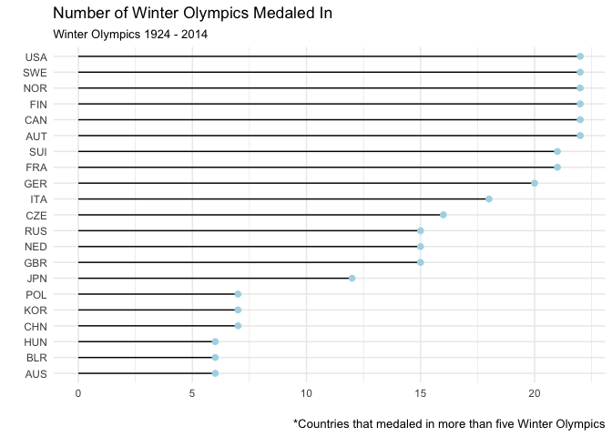
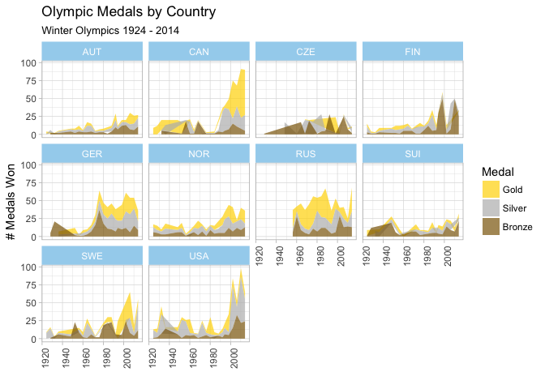
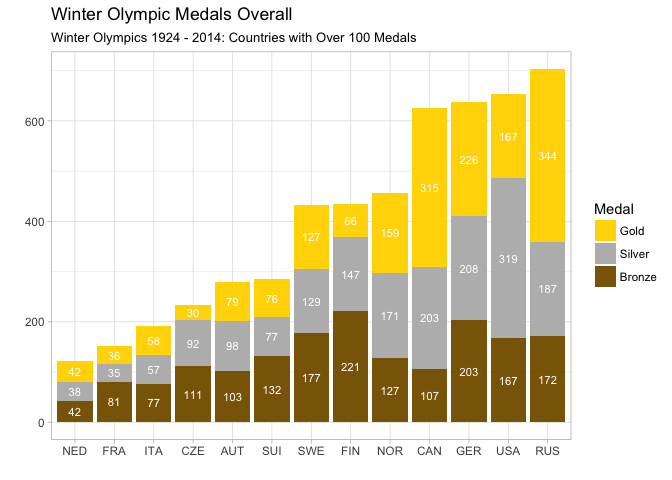
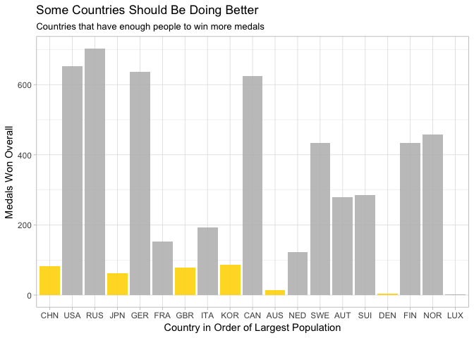
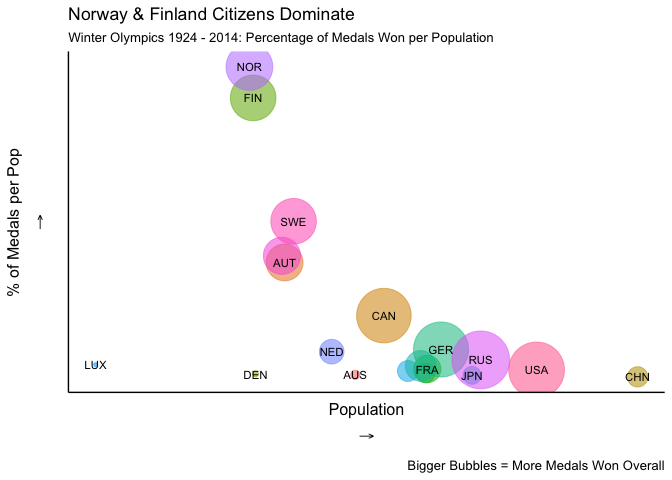
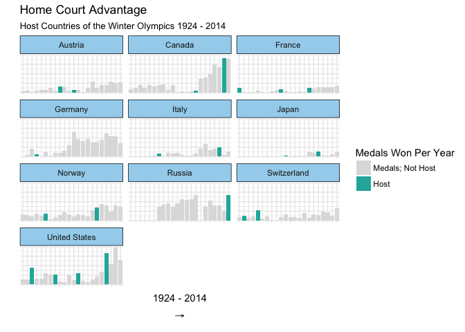
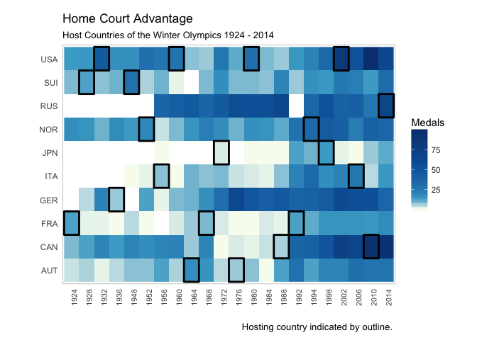
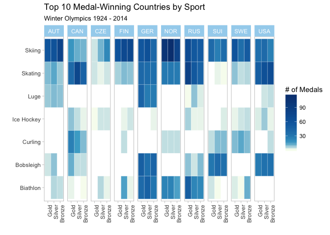
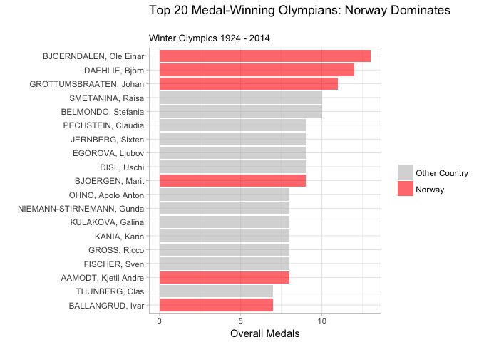
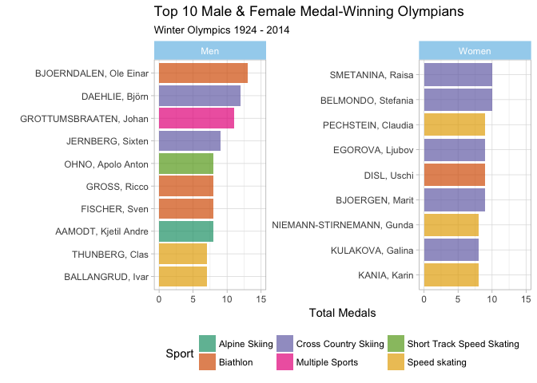

The Olympics is the best so let's talk about it.
Between 1924 and 2014, the US has competed and medaled in over 20 winter Olympic games. Because some countries competed under different designations in the past (e.g. Germany and Russia), the following analyses combined Russia with URS, Germany with EUA, FRG and GDR, YUG with Bosnia and Czech Republic with TCH. Seen below are the countries that participated in and medaled in over five winter games since 1924.

The below visualization represents the top 10 medal-winning countries throughout all Winter Olympics (1920-2014). While Canada and the USA seem to have won similarly large amounts of medals over time, the USA has won many more silver and gold, while Canada seems to win *just* gold. Keepin' their eyes on the prize!

The below visualization includes only countries that have won at least 100 medals, overall, over time. Russia and Canada have won an obscene amount of gold medals in their time -- the USA again seems to be fairly balanced in the colors of medals won. These are the countries to watch!

Next, the countries are lined up by population size and the height of each bar represents how many medals that country has won overall. Countries with the fewest medals are “shamed” by being highlighted in yellow. We'd think that larger populations have more opportunity for fostering top-performing athletes (which seems to be true for the USA and Russia) but, it seems like that's not always the case. China, Japan and the UK are all countries with particularly large populations that don’t tend to win as many medals as the other countries with as large populations.

Due to wildly varying country populations, it's important to take into account medal-per-capita to give credit to those countries with tiny populations but tons of incredibly strong athletes. The x-axis again represents country population, while the y-axis represents the percentage of medals won per-capita. The size of the circles represent how many medals have been won overall. Norway and Finland deserve all the love -- given their smaller populations, they've sure won a lot of medals!

Do Olympic athletes performing in their own country win more medals than when they're just visiting participants? Only countries that have hosted the Winter Olympics were included in this analysis-- we can see that most of them have done exceedingly better, if not, at least as well as they’ve ever done, when they've hosted.

Another way to represent this home-court advantage is below. Tiles outlined in black indicate that the country hosted that year.


Below is a visual display of the most successful winter Olympic athletes of all time. Some athletes have won medals in multiple sports, hence the designation. Norway tends to produce the top medal-winning winter athletes, which is not surprising given Norway’s clear success in prior plots.

When split by gender, it's clear that the most talented women dominate in Cross Country Skiing while men dominate in the Biathlon. Just to note: the top medal-bearing men have won a few more medals than the top women.

Graphics were created using R, Highcharter and Plotly. Data from Wikipedia. Code on Github.